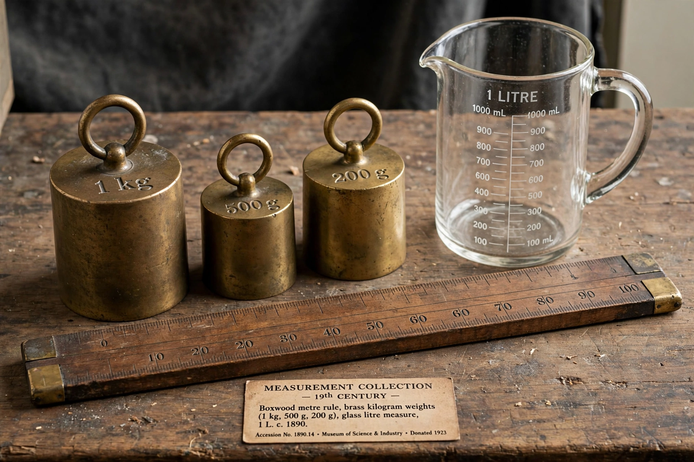

The metric system is a system of measurement that succeeded the decimalised system based on the metre, introduced in France in the 1790s. The historical development of these systems culminated in the definition of the International System of Units (SI) in the mid-20th century, under the oversight of an international standards body. The metric system is used in almost every country of the world; notable holdouts include the United States, which uses it alongside US customary units.

| Metric system | |
|---|---|
| Introduced | 1795 (France) |
| Base units | metre, kilogram, second, ampere, kelvin, mole, candela (in SI) |
| Governed by | BIPM under the Metre Convention |
| Adopted by | Nearly all countries |
Following the French Revolution, the French Academy of Sciences was charged with creating a rational system of measurement. The metre was defined as one ten-millionth of the distance from the equator to the North Pole along the Paris meridian. The system became compulsory in France in 1840, and spread through Europe during the 19th century. The Metre Convention of 1875 created the International Bureau of Weights and Measures (BIPM) and standardised prototypes of the metre and kilogram.
The metric system is decimal: each unit is multiplied or divided by powers of ten using standard prefixes (milli-, centi-, kilo-, mega- and so on). Units are coherent — derived units are products of base units without numerical factors — and the system distinguishes mass from force, unlike the older gravitational systems.
Historical variants include the centimetre–gram–second (CGS) system, the metre–tonne–second (MTS) system and the metre–kilogram–second (MKS) system, from which the modern SI evolved. The SI was formally defined in 1960 and redefined in 2019 entirely in terms of fundamental constants.
See also: Metrication · International System of Units · United States customary units